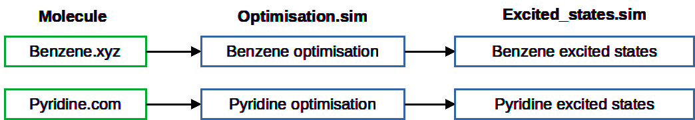
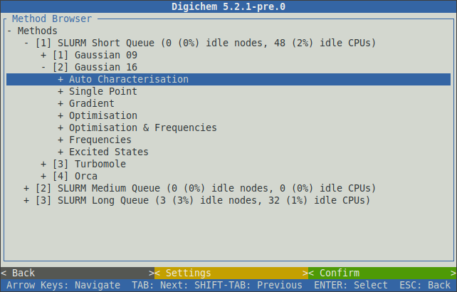
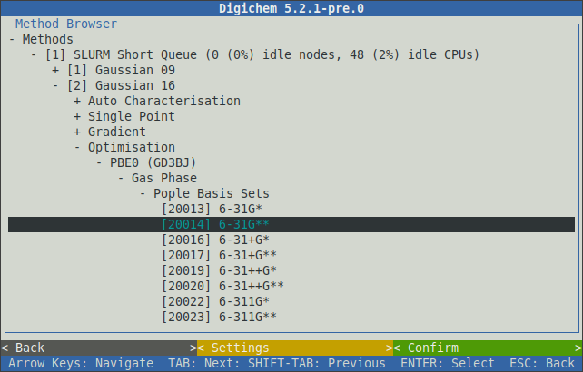
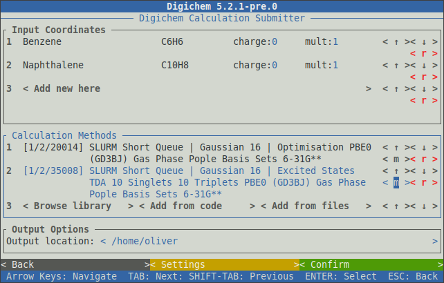

Digichem Submit
Command Line Interface (CLI)
Calculations are submitted using the digichem submit command:
$ digichem submit COORDINATE_FILE -m METHOD_FILE
Each calculation consists of two parts:
The coordinate file, which specifies the molecule.
The calculation method, which specifies the calculation options (eg, the functional and basis set).
Input Structures (Coordinate Files)
Coordinate files are specified after the digichem submit command:
$ digichem submit Benzene.xyz
Multiple coordinate files can be specified and they will all be submitted to the same method:
$ digichem submit Benzene.xyz Pyridine.xyz
Multiple coordinate files are always queued to run in parallel so the ordering of the coordinate files is generally not important. Molecules that are submitted first (ie, are earlier in the queue) may run before later submissions, but this depends on the configuration of the underlying resource management system.
Digichem supports a wide range of different coordinate file formats and these can be freely intermixed. There is no need to match the format of a coordinate file to a given calculation engine (so the Gaussian specific .com format can be used with a Turbomole calculation, and so on).
Only the geometry, charge and multiplicity (if available) are extracted from the coordinate file. Any calculation options (for example, in a Gaussian .com or ORCA .inp file) will be ignored, and should instead be specified in the method file (see below).
For the full list of supported file types, see Supported File Formats.
Calculation Options (Method Files)
Calculation options are specified by methods. These act like templates, and apply to every coordinate file that is submitted.
Methods can be chosen either from method files or from the built-in library. Method files can be specified using the -m option:
$ digichem submit Benzene.xyz -m Optimisation.sim
While methods from the library can be specified using the -c option and their unique code:
$ digichem submit Benzene.xyz -c 1/1/1
Or by their unique name (using the same -c option), if these are known:
$ digichem submit Benzene.xyz -c "Single Node SLURM/Gaussian 16/[Gaussian Optimisation, Gaussian B3LYP (GD3BJ), Gaussian Gas Phase, 'Gaussian 6-31G(d,p)']"
To explore which methods are included in the library, see the section on the Interactive Interface below.
Multiple methods can be specified using a mix of any of the method formats:
$ digichem submit Benzene.xyz -m Optimisation.sim -c 1/1/1
Multiple methods are always queued to run in series using the output geometry from the previous calculation. The order in which the methods are specified is the same order in which the calculations will be performed. This is a very powerful feature which allows chains of calculations to be easily setup in advance.
For example, the following command will submit four calculations to the queue:
$ digichem submit Benzene.xyz Pyridine.com -m Optimisation.sim Excited_states.sim
First, two optimisations will be queued, one each for the ‘Benzene’ and ‘Pyridine’ molecules. Once each of these calculations is completed, the optimised geometry will be automatically extracted and the excited states calculation will be queued, as demonstrated by the following flow diagram:
This pattern can be extended to any number of coordinate files and/or any number of methods, so computational studies of arbitrary size can be handled with ease.
Note
You can freely intermix different calculation engines in the method queue. The output from one program is always correctly formatted for the next program.
To learn more about method files, including what options are supported, please see the relevant section here.
Interactive Interface
Calculations can be submitted interactively using the digichem submit -I command:
$ digichem submit -I
This will open the submission interface:

The interface will respond to button clicks (using the mouse) and/or the arrow-keys and the enter key.
Coordinate files are displayed in the top panel, while methods are displayed in the middle panel.
The bottom panel selects the output location for the new calculations (see -O below).
Clicking the < Add new here > button in the top panel will open the coordinate file browser:
This window will display files from the local filesystem. Coordinate files can be selected by clicking on them:

Clicking the green < Confirm > button in the bottom-right will load the selected coordinates.
A popup will appear to indicate the file parsing progress:
Note
When 2D coordinate formats (such as ChemDraw) are loaded, a warning message (WARNING: Generating 3D coordinates from file...) will be issued.
This warning indicates that the 2D coordinates will be transformed into 3D coordinates via a rapid forcefield optimisation. In most cases,
this is desirable as it results in a better starting geometry. If you want to disable the preoptimisation, it can be toggled in the < Settings > window for the coordinate file browser.
See also the --gen3D option below.
Once the Finished loading coordinates message appears, the popup can be closed by clicking the < Confirm > button at the bottom of the window.
The loaded coordinates will now be displayed in the top-panel:
The charge: and mult: inputs can be changed to set the desired charge and multiplicity for each coordinate file.
Clicking the < r > button will remove the given coordinate file from the table.
Methods can be chosen either from the internal library (using the < Browse library > or < Add from code > buttons),
and/or from method files (using the < Add from files > button).
Clicking < Browse library > will open the method library browser:
The browser will show your configured submission destinations. These will normally correspond to your available SLURM and/or PBS queues. After the name of each queue, digichem will display some current usage statistics.
Selecting a queue will expand it to show the calculation engines (programs) that have been configured for that queue:

Likewise, selecting a calculation engine will expand it to show the available calculation types:
Once the main calculation type has been chosen (optimisation, excited states, etc.), further calculation options (functional, basis set, etc.) can then be selected in sequence:
After all the necessary options have been specified, clicking the < Confirm > button will add the selected method to the main window:
This process can be repeated to add further methods to the queue:
The unique code for each method is shown to the left of the method’s name. Each code consists of three parts which correspond to:
The destination (the SLURM or PBS queue)
The calculation engine (the program)
The calculation itself
For example, the two methods in the above picture have the codes 1/2/20014 and 1/2/35008. The first two numbers are the same because both methods use the same destination (SLURM Short Queue) and program (Gaussian 16).
If the method codes are known in advance, the < Add from code > button can be used to quickly add them to the method table without using the method browser:

Coordinate files and methods that are queued in the interactive interface function the same as when using the CLI:
Coordinate files are queued to run in parallel. Each coordinate file will run at the same time (assuming there are sufficient resources available).
Methods are queued to run in series. Each method will take the output geometry from the method that came before it.
The order in which the methods are specified is therefore important, and generally optimisations should appear first.
The ordering of the method can be changed using the < ↑ > and < ↓ > buttons to the right of the method name.
A method can be removed using the < r > button.
Once all the desired coordinate files and methods have been selected, clicking the < Confirm > button in the bottom right will submit the calculations to the queue:

You can now use the esc key to go back and setup more calculations, or you can close Digichem by using ctrl+c.
Using Both Interfaces
The command line and interactive interfaces can be intermixed, and options that are specified on the command line will be set appropriately in the interactive interface. This pattern is particularly useful for leveraging the scripting capabilities of the CLI while retaining the accessibility of the interactive interface.
For example, coordinate input files can be specified using the wildcard feature of your shell:
$ digichem submit *.* -I
This command will parse all files in your current directory that contain at least one dot (.) character, and will load them into the coordinate file table:

More specific patterns will restrict which types of files are loaded. For example, to parse only .xyz files:
$ digichem submit *.xyz -I
And so on.
The initial charge and multiplicity of each coordinate file can be set using the --charge (or -C) and --multiplicity (or -M) options respectively.
This can be useful for setting up large-scale radical cation/anion calculations:
$ digichem submit Benzene.xyz Pyridine.xyz -C 1 -M 2 -I

Methods can also be specified on the CLI, and these will be loaded into the method table:
$ digichem submit -c 1/1/1 -I

Of course, both the coordinate file(s) and method(s) can be specified on the CLI to quickly load both into their respective tables:
$ digichem submit *.* -c 1/1/1 -I